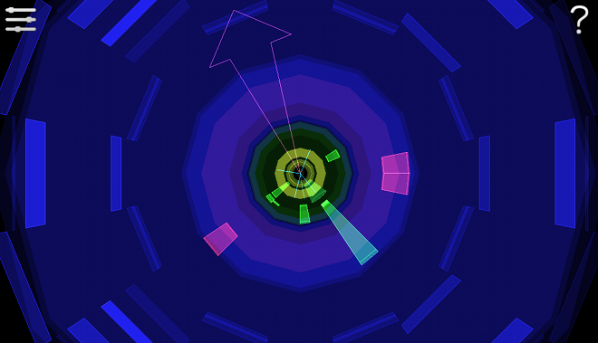
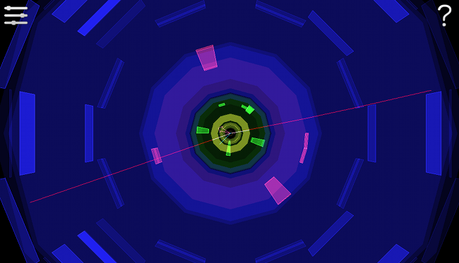

Each event may contain particles which decay into other particles. It becomes necessary to put together several pieces to see the overall picture.
A W boson can decay to a charged lepton and a neutrino. The charged lepton could be either an electron, muon or tau particle. Since tau particles decay quickly, it is easiest to look for an electron or a muon, together with a large amount of missing energy carried by the neutrino.
An example W boson event can be seen below. The short-lived W boson always decays before it can be seen – this one has decayed into an electron (green cone) and an invisible neutrino (pink arrow).

The Z boson can decay to quarks or to any lepton together with its anti-particle. The easiest way to spot a Z boson is when it decays to an electron together with its anti-particle, or to a muon together with its anti-particle.
An example Z boson event can be seen below. This Z boson has decayed into a muon and an anti-muon (red lines).
